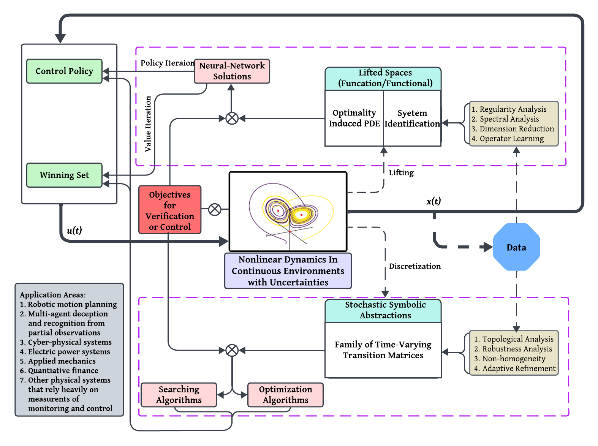

Research
Overview
Society has been rapidly advancing towards an era dominated by autonomous systems and computational intelligence.
However, existing computing techniques continue to grapple with inaccuracies and inefficiencies, predominantly
stemming from insufficient understanding of continuous-time noisy signals, internal transitions, and external interactions.
These limitations bring forth an imperative need to account for uncertainties in continuous dynamical environments,
which is set to play a pivotal role in revolutionizing future intelligent autonomy.
My research aims to bridge the gap between traditional mathematical control theory and modern AI-enhanced
computational techniques, with a scope that broadly encompasses physics-informed verification and decision-making for
complex, uncertain dynamical systems. Applicable fields range from physical actuated systems and cyber-physical
systems, to domains where social beings
or robots coexist, cooperate, and
compete.
Methodology

Current challenges in AI research include: (1) a lack of analytical understanding of the regularities of an uncertain but known system, (2) a lack of theoretical and computational integration, and hence the lack of formal certifiable guarantees, and (3) computation complexity and the ‘curse of dimensionality’.
I approach my mission
from a bottom-up perspective. My focus
is on:
- investigating uncertain system regularities based on system transition and their interrelationships with control objectives and data structures, and
- developing novel and efficient scientific machine learning methods, along with other computational approaches in control theory